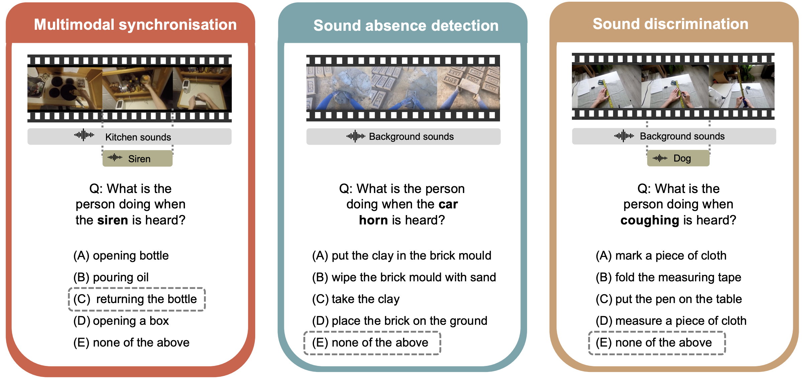

NeurIPS 2025
DAVE: Diagnostic benchmark for Audio Visual Evaluation
A diagnostic benchmark for systematically evaluating audio-visual models, preventing visual bias by decoupling evaluation into atomic subcategories. It ensures both modalities are necessary for correct answers.